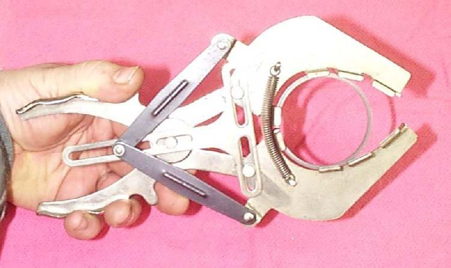
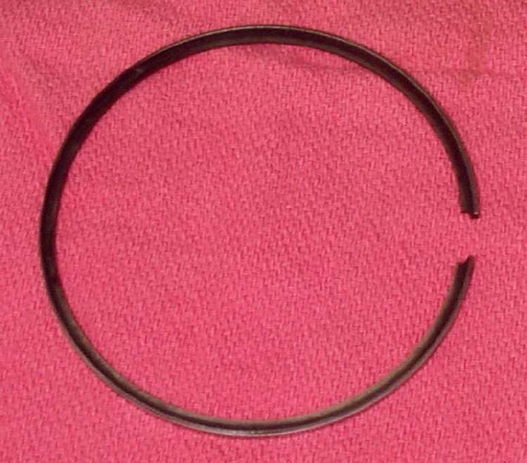
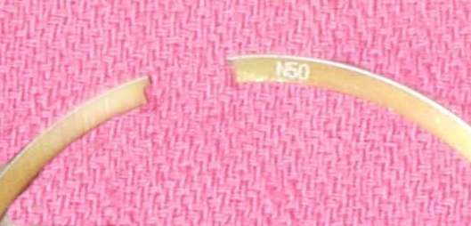

Piston rings are thin split metal rings that sit in grooves around the top of the piston. A four-stroke usually has two compression rings and one oil ring made of three pieces. A two-stroke usually has two compression rings and no oil ring.
What it does
The top rings seal the pressure above the piston so it pushes on the piston instead of leaking into the crankcase. The oil ring scrapes oil off the cylinder wall so it does not burn. Rings wear thinner with time, dust and dirty oil. Worn rings let gas and oil pass, and their end gap grows.
Signs it is worn or failing
- Blue or grey smoke, worst under load.
- Oil level drops with no leak.
- Oily spark plug.
- Smoke or mist from the breather.
- Low compression that rises when a little oil is put in the cylinder (wet test).
When to replace it
When end gap or groove clearance is past the limit, or whenever the cylinder is opened and the bore is honed or bored. Never reuse rings after a seizure. Follow your bike's manual.
What to match when buying
- Match engine code and piston size: standard or the exact oversize.
- Ring sets are matched to a brand of piston. Rings from a different piston maker may not fit the grooves.
- Check the set has every ring: top, second and oil ring with its expander.
- Check marks: "N", "T", "R" or a dot shows the side that faces up.
Fitting notes
- Workshop job. Check the end gap with each ring pushed square into the bore before fitting.
- Fit with the mark up, stagger the gaps, and make sure oil ring expander ends butt and do not overlap. Two-stroke ring gaps must sit over the locating pins.
- Rings are brittle and sharp. See Assess the top end and Test engine compression.
- A three-piece oil ring has no up or down side. On two-strokes a bevelled end fits against the peg in the groove.
- New rings need a break-in with varied load to seat. Some ring sets have no marks for the top side, so check the shape before fitting.
- Imported bikes may sell ring sets only with the piston and cylinder.
Reference (K-Light 125)
| Item | Value | PDF page |
|---|---|---|
| Ring end gap, top and second | 0.15 to 0.30 mm, limit 0.5 mm | 213 |
| Ring to groove clearance, top and second | limit 0.09 mm | 213 |